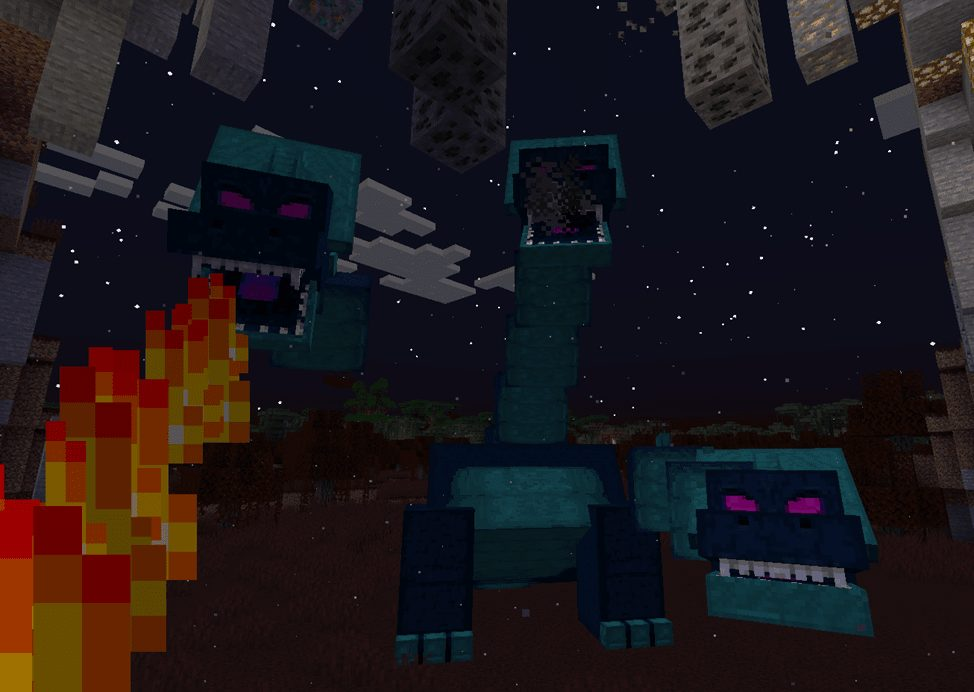

STAGE 4：ヒドラ Hydra
このMod最大のHP。首は切れば増える。それが仕様。

場所 炎の沼地「ヒドラの巣」HP 360危険度 ★★★★☆解放 高原の一部
行く前の準備
炎の沼地は、ミーフストロガノフを食べていないと炎の雨で入れない。地形自体も燃えやすいので、耐火ポーションを用意する：醸造台で「奇妙なポーション（水入り瓶＋ネザーウォート）」＋マグマクリームで3分間耐火。レッドストーンを足すと8分に延長。マグマクリームはネザーのマグマキューブから。
倒し方
- ダメージが入るのは頭だけ。胴体を殴っても無駄
- 頭を1本倒すと2本生えてくる（最大7本）。増えても慌てない、そういう生き物
- 炎ブレスは即死級。距離を取って弓で頭を狙うのが安定。口を開けた頭が狙い目
- 長丁場になるので矢と食料は多めに。近くの丘の上が比較的安全な足場
耐火ポーション複数、弓と矢を多めに、予備の食料。ファイアリー装備の材料を持ち帰るのでインベントリに空きも
🎁 戦利品：
ファイアリーな血（鉄インゴットとクラフト→ファイアリーインゴット。作り方は
素材手帖）、
ヒドラチョップ（体力が大きく回復する高級肉）、トロフィー
ギリシャ神話のヒドラ完全再現。頭が増えるたび「やばい」と思いがちだが、増えた頭も倒せばちゃんと減る。根気の勝負。